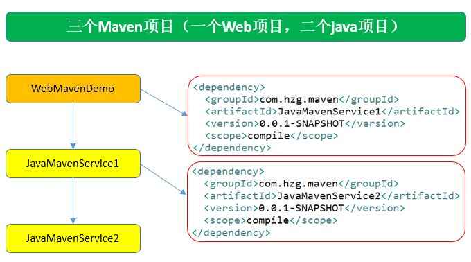
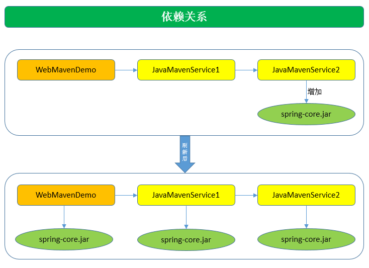
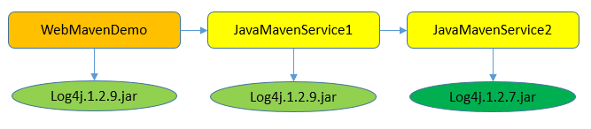
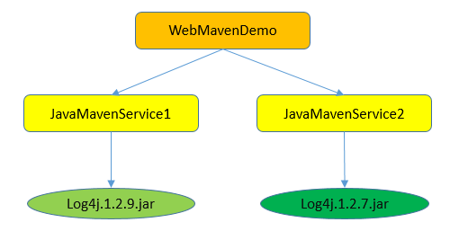
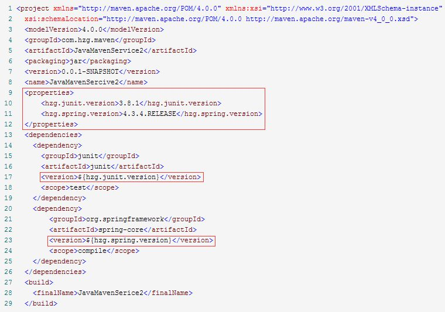

maven工程的依赖高级特性
① 依赖的传递性

WebMavenDemo项目依赖JavaMavenService1 JavaMavenService1项目依赖JavaMavenService2
pom.xml文件配置好依赖关系后，必须首先mvn install后，依赖的jar包才能使用。
- WebMavenDemo的pom.xml文件想能编译通过，JavaMavenService1必须mvn install
- JavaMavenService的pom.xml文件想能编译通过，JavaMavenService2必须mvn install
传递性：

在Eclipse中，为JavaMavenService2中增加了一个spring-core.jar包后，会惊喜的发现依赖的两个项目都自动的增加了这个jar包，这就是依赖的传递性。
注意：非compile范围的依赖是不能传递的。
② 依赖版本的原则：
1、路径最短者优先原则

Service2的log4j的版本是1.2.7版本，Service1排除了此包的依赖，自己加了一个Log4j的1.2.9的版本，那么WebMavenDemo项目遵守路径最短优先原则，Log4j的版本和Sercive1的版本一致。
2、路径相同先声明优先原则

这种场景依赖关系发生了变化，WebMavenDemo项目依赖Sercive1和Service2，它俩是同一个路径，那么谁在WebMavenDemo的pom.xml中先声明的依赖就用谁的版本。
③ 统一管理依赖的版本：

为了统一管理版本号，可以使用properties标签，里面可以自定义版本的标签名。在使用的地方使用${自定义标签名}